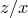
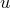

The settings section can contain any of the following settings in any order:
Aspect |
Possible values: Any floating-point number. Analogous set command: set size ratio Sets the |
AutoAspect |
Possible values: On, Off. Analogous set command: set size ratio Sets whether plots have the automatic |
AutoZAspect |
Possible values: On, Off. Analogous set command: set size zratio Sets whether 3d plots have the automatic  aspect ratio, which is the golden ratio. If On, then the above setting is ignored. |
AxesColour |
Possible values: Any recognised colour. Analogous set command: set axescolour Sets the colour of axis lines and ticks. |
AxisUnitStyle |
Possible values: Bracketed, Ratio, SquareBracketed Analogous set command: set axisunitstyle Sets the style in which the physical units of quantities plotted against axes are appended to axis labels. |
Backup |
Possible values: On, Off. Analogous set command: set backup When this switch is set to On, and plot output is being directed to file, attempts to write output over existing files cause a copy of the existing file to be preserved, with a tilde after its old filename (see Section 2.4). |
Bar |
Possible values: Any floating-point number. Analogous set command: set bar Sets the horizontal length of the lines drawn at the end of errorbars, in units of their default length. |
BinOrigin |
Possible values: Any floating-point number. Analogous set command: set binorigin Sets the point along the abscissa axis from which the bins used by the histogram command originate. |
BinWidth |
Possible values: Any floating-point number. |
BoxFrom |
Possible values: Any floating-point number. Analogous set command: set boxfrom Sets the horizontal point from which bars on bar charts appear to emanate. |
BoxWidth |
Possible values: Any floating-point number. Analogous set command: set boxwidth Sets the default width of boxes on barcharts. If negative, then the boxes have automatically selected widths, so that the interfaces between bars occur at the horizontal midpoints between the specified datapoints. |
CalendarIn |
Possible values: British, French, Greek, Gregorian, Hebrew, Islamic, Julian, Papal, Russian. Analogous set command: set calendar Sets the default calendar for the input of dates from day, month and year representation into Julian Date representation. See Section 4.11 for more details. |
CalendarOut |
Possible values: British, French, Greek, Gregorian, Hebrew, Islamic, Julian, Papal, Russian. Analogous set command: set calendar Sets the default calendar for the output of dates from Julian Date representation to day, month and year representation. See Section 4.11 for more details. |
Clip |
Possible values: On, Off. Analogous set command: set clip Sets whether datapoints close to the edges of graphs should be clipped at the edges (On) or allowed to overrun the axes (Off). |
ColKey |
Possible values: On, Off. Analogous set command: set colkey Sets whether colourmap plots have a scale along one side relating colour to ordinate value. |
ColKeyPos |
Possible values: Top, Bottom, Left, Right. Analogous set command: set colkey Sets the side of the plot along which the colour legend should appear on colourmap plots. |
Colour |
Possible values: On, Off. Analogous set command: set terminal Sets whether output should be colour (On) or monochrome (Off). |
Contour |
Possible values: Any integer. Analogous set command: set contour Sets the number of contours which are drawn in the contourmap plot style. |
C?Range_Log |
Possible values: True, False. Analogous set command: set logscale c When the variables c1–c4 are set to renormalise in the C?Range_Renorm setting, this setting determines whether colour maps are drawn with logarithmic or linear colour scales. The ? wildcard should be replaced with an integer in the range 1–4 to alter the renormalisation of the variables c1 through c4 respectively in the expressions supplied to the colmap setting. In the case of c1, this setting also determines whether contours demark linear or logarithmic intervals on contour maps. |
C?Range_Max |
Possible values: Any floating-point number. Analogous set command: set crange When the variables c1–c4 are set to renormalise in the C?Range_Renorm setting, this setting determines the upper limit of the range of values demarked by differing colours on colour maps. The ? wildcard should be replaced with an integer in the range 1–4 to alter the renormalisation of the variables c1 through c4 respectively in the expressions supplied to the colmap setting. In the case of c1, this setting also determines the range of ordinate values for which contours are drawn on contour maps. |
C?Range_Max_Auto |
Possible values: True, False. Analogous set command: set crange When the variables c1–c4 are set to renormalise in the C?Range_Renorm setting, this setting determines whether the upper limit of the range of values demarked by differing colours on colour maps should autoscale to fit the data, or be a fixed value as specified in the C?Range_Max setting. The ? wildcard should be replaced with an integer in the range 1–4 to alter the renormalisation of the variables c1 through c4 respectively. In the case of c1, this setting also affects the range of ordinate values for which contours are drawn on contour maps. |
C?Range_Min |
Possible values: Any floating-point number. Analogous set command: set crange When the variables c1–c4 are set to renormalise in the C?Range_Renorm setting, this setting determines the lower limit of the range of values demarked by differing colours on colour maps. The ? wildcard should be replaced with an integer in the range 1–4 to alter the renormalisation of the variables c1 through c4 respectively in the expressions supplied to the colmap setting. In the case of c1, this setting also determines the range of ordinate values for which contours are drawn on contour maps. |
C?Range_Min_Auto |
Possible values: True, False. Analogous set command: set crange When the variables c1–c4 are set to renormalise in the C?Range_Renorm setting, this setting determines whether the lower limit of the range of values demarked by differing colours on colour maps should autoscale to fit the data, or be a fixed value as specified in the C?Range_Min setting. The ? wildcard should be replaced with an integer in the range 1–4 to alter the renormalisation of the variables c1 through c4 respectively. In the case of c1, this setting also affects the range of ordinate values for which contours are drawn on contour maps. |
C?Range_Renorm |
Possible values: True, False. Analogous set command: set crange Sets whether the variables c1–c4, used in the construction of colour maps, should be renormalised into the range 0–1 before being passed to the expressions supplied to the set colmap command, or whether they should contain the exact data values supplied in the 3rd–6th columns of data to the colourmap plot style. The ? wildcard should be replaced with an integer in the range 1–4 to alter the renormalisation of the variables c1 through c4 respectively. |
C?Range_Reverse |
Possible values: True, False. Analogous set command: set crange When the variables c1–c4 are set to renormalise in the C?Range_Renorm setting, this setting determines whether the renormalisation into the range 0–1 is inverted such that the maximum value maps to zero and the minimum value maps to one. The ? wildcard should be replaced with an integer in the range 1–4 to alter the renormalisation of the variables c1 through c4 respectively. |
DataStyle |
Possible values: Any plot style. Analogous set command: set data style Sets the plot style used by default when plotting datafiles. |
Display |
Possible values: On, Off. Analogous set command: set display When set to On, no output is produced until the set display command is issued. This is useful for speeding up scripts which produce large multiplots; see Section 3.1.3 for more details. |
DPI |
Possible values: Any floating-point number. Analogous set command: set terminal dpi Sets the sampling quality used, in dots per inch, when output is sent to a bitmapped terminal (the bmp, jpeg, gif, png and tif terminals). |
FontSize |
Possible values: Any floating-point number. Analogous set command: set fontsize Sets the fontsize of text, where |
FuncStyle |
Possible values: Any plot style. Analogous set command: set function style Sets the plot style used by default when plotting functions. |
Grid |
Possible values: On, Off. Analogous set command: set grid Sets whether a grid should be displayed on plots. |
GridAxisX |
Possible values: Any integer. Analogous set command: None Sets the default horizontal axis to which gridlines should attach, if the set grid command is called without specifying which axes to use. |
GridAxisY |
Possible values: Any integer. Analogous set command: None Sets the default vertical axis to which gridlines should attach, if the set grid command is called without specifying which axes to use. |
GridAxisZ |
Possible values: Any integer. Analogous set command: None Sets the default |
GridMajColour |
Possible values: Any recognised colour. Analogous set command: set gridmajcolour Sets the colour of major grid lines. |
GridMinColour |
Possible values: Any recognised colour. Analogous set command: set gridmincolour Sets the colour of minor grid lines. |
Key |
Possible values: On, Off. Analogous set command: set key Sets whether a legend is displayed on plots. |
KeyColumns |
Possible values: Any integer Analogous set command: set keycolumns Sets the number of columns into which the legends of plots should be divided. If a value of zero is given, then the number of columns is decided automatically for each plot. |
KeyPos |
Possible values: Top Right, Top XCentre, Top Left, YCentre Right, YCentre XCentre, YCentre Left, Bottom Right, Bottom XCentre, Bottom Left, Above, Below, Outside. Analogous set command: set key Sets where the legend should appear on plots. |
Key_XOff |
Possible values: Any floating-point number. Analogous set command: set key Sets the horizontal offset, in approximate graph-widths, that should be applied to the legend, relative to its default position, as set by KEYPOS. |
Key_YOff |
Possible values: Any floating-point number. Analogous set command: set key Sets the vertical offset, in approximate graph-heights, that should be applied to the legend, relative to its default position, as set by KEYPOS. |
Landscape |
Possible values: On, Off. Analogous set command: set terminal Sets whether output is in portrait orientation (Off), or landscape orientation (On). |
LineWidth |
Possible values: Any floating-point number. Analogous set command: set linewidth Sets the width of lines on plots, as a multiple of the default. |
MultiPlot |
Possible values: On, Off. Analogous set command: set multiplot Sets whether multiplot mode is on or off. |
NumComplex |
Possible values: On, Off. Analogous set command: set numerics Sets whether complex arithmetic is enabled, or whether all non-real results to calculations should raise numerical exceptions. |
NumDisplay |
Possible values: LaTeX, Natural, Typeable. Analogous set command: set numerics Sets whether numerical results are displayed in a natural human-readable way, e.g. |
NumErr |
Possible values: On, Off. Analogous set command: set numerics Sets whether explicit error messages are thrown when calculations yield undefined results, as in the cases of division by zero or the evaluation of functions in regions where they are undefined or infinite. If explicit error messages are disabled, such calculations quietly return nan. |
NumSF |
Possible values: Any integer between 0 and 30. Analogous set command: set numerics Sets the number of significant figures to which numerical quantities are displayed by default. |
OriginX |
Possible values: Any floating point number. Analogous set command: set origin Sets the horizontal position, in centimetres, of the default origin of plots on the page. Most useful when multiplotting many plots. |
OriginY |
Possible values: Any floating point number. Analogous set command: set origin Sets the vertical position, in centimetres, of the default origin of plots on the page. Most useful when multiplotting many plots. |
Output |
Possible values: Any string (case sensitive). Analogous set command: set output Sets the output filename for plots. If blank, the default filename of pyxplot.foo is used, where foo is an extension appropriate for the file format. |
PaperHeight |
Possible values: Any floating-point number. Analogous set command: set papersize Sets the height of the papersize for PostScript output in millimetres. |
PaperName |
Possible values: A string matching any of the papersizes listed in Chapter 5. Analogous set command: set papersize Sets the papersize for PostScript output to one of the pre-defined papersizes listed in Chapter 5. |
PaperWidth |
Possible values: Any floating-point number. Analogous set command: set papersize Sets the width of the papersize for PostScript output in millimetres. |
PointLineWidth |
Possible values: Any floating-point number. Analogous set command: set pointlinewidth Sets the linewidth used to stroke points onto plots, as a multiple of the default. |
PointSize |
Possible values: Any floating-point number. Analogous set command: set pointsize Sets the sizes of points on plots, as a multiple of their normal sizes. |
Samples |
Possible values: Any integer. Analogous set command: set samples Sets the number of samples (datapoints) to be evaluated along the abscissa axis when plotting a function. |
Samples_Method |
Possible values: InverseSquare, NearestNeighbour. Analogous set command: set samples Sets the method used to interpolate two-dimensional non-gridded arrays of datapoints from datafiles within the interpolate command and when plotting using the colourmap, contourmap and surface plot styles. |
Samples_X |
Possible values: Any integer. Analogous set command: set samples Sets the number of samples (datapoints) to be evaluated along the first abscissa axis when drawing colour maps and surfaces, and when calculating contour maps. |
Samples_X_Auto |
Possible values: True, False. Analogous set command: set samples Sets whether the number of samples (datapoints) to be evaluated along the first abscissa axis when drawing colour maps and surfaces, and when calculating contour maps should follow the number of samples set with the set samples command. |
Samples_Y |
Possible values: Any integer. Analogous set command: set samples Sets the number of samples (datapoints) to be evaluated along the second abscissa axis when drawing colour maps and surfaces, and when calculating contour maps. |
Samples_Y_Auto |
Possible values: True, False. Analogous set command: set samples Sets whether the number of samples (datapoints) to be evaluated along the second abscissa axis when drawing colour maps and surfaces, and when calculating contour maps should follow the number of samples set with the set samples command. |
TermAntiAlias |
Possible values: On, Off. Analogous set command: set terminal Sets whether output sent to the bitmapped graphics output terminals – i.e. the bmp, jpeg, gif, png and tif terminals – is antialiased. Antialiasing smooths the colour boundaries to disguise the effects of pixelisation and is almost invariably desirable. |
TermEnlarge |
Possible values: On, Off. Analogous set command: set terminal When set to On output is enlarged or shrunk to fit the current paper size. |
TermInvert |
Possible values: On, Off. Analogous set command: set terminal Sets whether jpeg/gif/png output has normal colours (Off), or inverted colours (On). |
TermTransparent |
Possible values: On, Off. Analogous set command: set terminal Sets whether jpeg/gif/png output has transparent background (On), or solid background (Off). |
TermType |
Possible values: bmp, eps, gif, jpg, pdf, png, ps, svg, tif, X11_multiwindow, X11_persist, X11_singlewindow. Analogous set command: set terminal Sets whether output is sent to the screen, using one of the X11_... terminals, or to disk. In the latter case, output may be produced in a wide variety of graphical formats. |
TextColour |
Possible values: Any recognised colour. Analogous set command: set textcolour Sets the colour of all text output. |
TextHAlign |
Possible values: Left, Centre, Right. Analogous set command: set texthalign Sets the horizontal alignment of text labels to their given reference positions. |
TextVAlign |
Possible values: Top, Centre, Bottom. Analogous set command: set textvalign Sets the vertical alignment of text labels to their given reference positions. |
Title |
Possible values: Any string (case sensitive). Analogous set command: set title Sets the title to appear at the top of the plot. |
Title_XOff |
Possible values: Any floating point number. Analogous set command: set title Sets the horizontal offset of the title of the plot from its default central location. |
Title_YOff |
Possible values: Any floating point number. Analogous set command: set title Sets the vertical offset of the title of the plot from its default location at the top of the plot. |
TRange_Log |
Possible values: True, False. Analogous set command: set logscale t Sets whether the |
TRange_Max |
Possible values: Any floating-point number. Analogous set command: set trange Sets upper limit of the |
TRange_Min |
Possible values: Any floating-point number. Analogous set command: set trange Sets lower limit of the |
UnitAbbrev |
Possible values: On, Off. Analogous set command: set unit Sets whether physical units are displayed in abbreviated form, e.g. mm, or in full, e.g. millimetres. |
UnitAngleDimless |
Possible values: On, Off. Analogous set command: set unit Sets whether angles are treated as dimensionless units, or whether the radian is treated as a base unit. |
UnitPrefix |
Possible values: On, Off. Analogous set command: set unit Sets whether SI prefixes, such as milli- and mega- are prepended to SI units where appropriate. |
UnitScheme |
Possible values: Ancient, CGS, Imperial, Planck, SI, USCustomary. Analogous set command: set unit Sets the scheme of physical units in which quantities are displayed. |
URange_Log |
Possible values: True, False. Analogous set command: set logscale u Sets whether the -axis – used for parametric plotting – is linear or logarithmic. |
URange_Max |
Possible values: Any floating-point number. Analogous set command: set urange Sets upper limit of the -axis, used for parametric plotting. |
URange_Min |
Possible values: Any floating-point number. Analogous set command: set urange Sets lower limit of the |
VRange_Log |
Possible values: True, False. Analogous set command: set logscale v Sets whether the |
VRange_Max |
Possible values: Any floating-point number. Analogous set command: set vrange Sets upper limit of the |
VRange_Min |
Possible values: Any floating-point number. Analogous set command: set vrange Sets lower limit of the |
Width |
Possible values: Any floating-point number. Analogous set commands: set width, set size Sets the width of plots in centimetres. |
View_XY |
Possible values: Any floating-point number. Analogous set commands: set view Sets the viewing angle of three-dimensional plots in the |
View_YZ |
Possible values: Any floating-point number. Analogous set commands: set view Sets the viewing angle of three-dimensional plots in the |
ZAspect |
Possible values: Any floating-point number. Analogous set command: set size ratio Sets the aspect ratio of 3d plots. |
 aspect ratio of plots.
aspect ratio of plots.  represents 10-point text, and other values differ multiplicatively.
represents 10-point text, and other values differ multiplicatively.  -axis to which gridlines should attach, if the set grid command is called without specifying which axes to use.
-axis to which gridlines should attach, if the set grid command is called without specifying which axes to use.  .
.  , in LaTeX, e.g. $
, in LaTeX, e.g. $ ,mathrm{m}$, or in a way which may be pasted back into PyXPlot, e.g. 2*unit(m).
,mathrm{m}$, or in a way which may be pasted back into PyXPlot, e.g. 2*unit(m).  -axis – used for parametric plotting – is linear or logarithmic.
-axis – used for parametric plotting – is linear or logarithmic.  -axis – used for parametric plotting – is linear or logarithmic.
-axis – used for parametric plotting – is linear or logarithmic.  -
- plane in degrees.
plane in degrees.